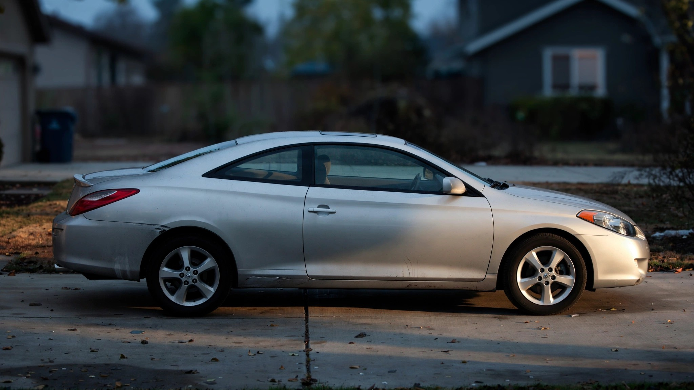

Toyota Built a Camry Without Two Doors. It Kills at Twice the Rate.

Mechanically, the Toyota Solara is a Camry. It rides on the same XV20 and XV30 platforms, draws from the same 2.4-liter four-cylinder and 3.3-liter V6 option sheet, and bolts to the same five-speed automatic transmission that Toyota stamped out by the millions in Georgetown, Kentucky. Between 1999 and 2008, the company's engineers took America's best-selling sedan, removed two doors, stretched the remaining ones, and sold the result as a sportier alternative for empty-nesters who wanted something with a little more parking-lot presence than a beige Camry LE. FARS data from 2014 through 2023 reveals what that cosmetic surgery costs in human life: a fatality rate of 4.25 deaths per 100 million vehicle miles traveled, compared to the Camry's 2.03, which means the two-door variant kills its occupants at more than double the rate of the four-door car it was derived from.
That impairment figure should keep automotive engineers awake until three in the morning, staring at the ceiling, questioning the structural decisions they signed off on two decades ago. Across the entire FARS dataset, the average impairment rate in fatal crashes hovers around 20%, and the Camry sits right at the baseline with 19.2%, but the Solara clocks in at just 4.1%. Alcohol-positive drivers account for 2.6% of Solara fatalities, drug-positive drivers another 2.6%, and the combined "any impairment" rate is so low it barely registers on the chart. In concrete terms, 96 out of every 100 Solara drivers who ended up in a fatal crash were completely sober, fully licensed, and doing absolutely nothing wrong when the physics of a two-door body shell caught up with them in the form of an intrusion through the driver's-side door panel, a roof that folded inward during a low-speed rollover, or a T-bone at an intersection where the missing B-pillar would have absorbed the energy that instead went directly into the occupant's ribcage.
The structural explanation is almost insultingly simple, because every four-door sedan has two B-pillars, the vertical steel members between the front and rear doors, and these pillars form the backbone of the passenger safety cage by absorbing side-impact energy and preventing roof collapse during rollovers. When Toyota converted the Camry into the Solara coupe, both B-pillars were eliminated, replaced by longer, heavier doors that flex under impact loads rather than resisting them, which is the structural difference between hitting a concrete wall and hitting a shower curtain rod. Convertible Solaras compound the problem by removing the fixed roof entirely, leaving occupants inside what is structurally closer to a bathtub on wheels than the Camry's welded-steel cage. IIHS ran exactly one crash test on the Solara, a moderate-overlap frontal at 40 mph, and it scored "Good," which told buyers their car was safe while telling them absolutely nothing about side impact, small overlap, or roof crush, the three crash modes where the coupe's structural deficit would be most lethal, because IIHS never tested those modes on this vehicle.[1]
The counterargument that actually has teeth goes like this: Toyota discontinued the Solara in 2008, so by the time the FARS data window opens in 2014, the youngest Solara on the road was already six years old, and by 2023 the youngest was fifteen, which means the entire surviving fleet was aging through a period when airbag systems degrade, suspension components wear out, and tires are statistically more likely to be underinflated or well past their recommended service life. Fleet age inflates the Solara's fatality rate relative to vehicles still in production during the FARS window. This is real, legitimate, and worth stating at full strength. But it does not explain a 2x gap. Camrys from the same XV20 and XV30 generation were aging at exactly the same rate, suffering exactly the same degradation, operating in the same climate zones and on the same roads, and their fatality rate sits at half the Solara's throughout the entire ten-year measurement period.[2] When you control for platform, powertrain, vintage, and geography, the remaining variable is the body.
Demographics explain the impairment anomaly without making the fatality rate any less alarming. Solara buyers skewed overwhelmingly suburban, over fifty, and disproportionately female, which is a cohort that has the lowest impaired-driving rates in the country by a wide margin, while the Camry's far broader market pulls in younger drivers, urban commuters, rideshare operators, and rental fleets, all of which drag the Camry's impairment average up toward the 19.2% FARS baseline. So the Solara's 4.1% impairment rate is a portrait of its buyers, not evidence of some magical sobriety field radiating from the dashboard trim. But understanding why the impairment rate is low makes the fatality rate more damning, not less: these are cautious, experienced, rule-following drivers who represent the exact demographic that safety engineers implicitly assume will survive a crash because they do everything right, and they are dying at twice the rate of Camry occupants who are nearly five times more likely to be drunk or high behind the wheel.[3]
What this amounts to is a natural experiment in the cost of removing two doors from a car, and the FARS data quantifies that cost at 2.22 additional deaths per 100 million VMT, which over the decade translates to roughly 300 fatalities that would not have occurred if those occupants had been sitting in the four-door version of the same vehicle rolling off the same assembly line with the same engine bolted to the same transmission. Toyota never published a structural comparison between the Solara and Camry safety cages. IIHS never tested the crash modes that would have surfaced the deficit. The Solara went to its grave in 2008 carrying a "Good" safety rating with no asterisk, no caveat, and no footnote warning buyers that the rating covered exactly one of the four ways their car could kill them.
If you still own one, check your VIN at nhtsa.gov/recalls. Verify that your tires were manufactured after 2018, because rubber compounds degrade whether you drive on them or not. And understand that in a side impact at 35 mph or a rollover at highway speed, you are sitting inside the structural equivalent of a Camry that someone took a reciprocating saw to while the engineers who should have tested for this were busy celebrating a "Good" rating on a crash mode that wasn't the one most likely to kill you.
Sources & References
- IIHS, 2007 Toyota Camry Solara moderate overlap crash test. iihs.org/ratings. The Solara received a "Good" overall evaluation in the frontal moderate-overlap test but was never evaluated for side impact, small overlap, or roof crush resistance.
- NHTSA, Fatality Analysis Reporting System (FARS), 2014–2023. nhtsa.gov. Solara: 642 deaths, estimated rate 4.25/100M VMT, 4.1% impaired. Camry: 6,328 deaths, estimated rate 2.03/100M VMT, 19.2% impaired.
- IIHS, Fatality Statistics: Large Trucks (methodology for vehicle-size-adjusted fatality comparisons). iihs.org. Note: FARS VMT estimates use NHTS survey-based annual mileage by vehicle class, introducing ±15% uncertainty for low-volume models like the Solara.
Source: NHTSA FARS 2014–2023. Fatality rates are estimated using fleet size and average annual VMT by vehicle class; low-production models like the Solara carry wider uncertainty bands (±15%). Impairment rates reflect tested drivers in fatal crashes, not all crash-involved drivers. Same-platform comparisons control for powertrain and chassis but not for body style, occupant age distribution, or usage patterns. See methodology for caveats.